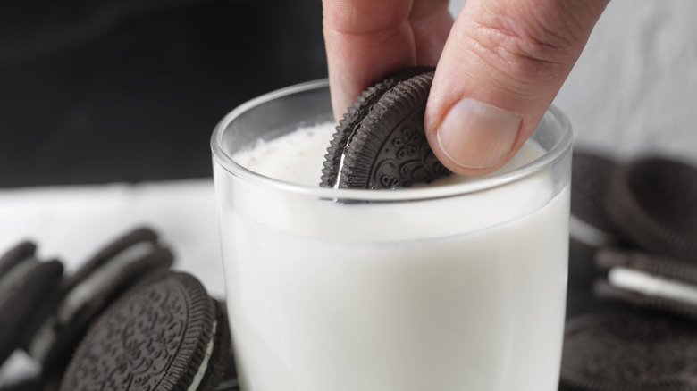

Traditional Gourmet American Dessert: Oreos & Milk

Cookies and cream - the pinnacle of desserts.
Dunk, pull, crunch, repeat. A well-rounded offering complete with crispy cookies and soft cream filling, this timeless combination has stood the test of time.
Ingredients
- Oreos (preferrably Double Stuf)
- milk
Steps
- Remove Oreos from package by the handful
- Pour milk almost to the brim of the glass
- Partially dunk Oreo in milk for 2-3 seconds until milk has begun to permeate the structure of the cookie
- Remove Oreo from milk and enjoy